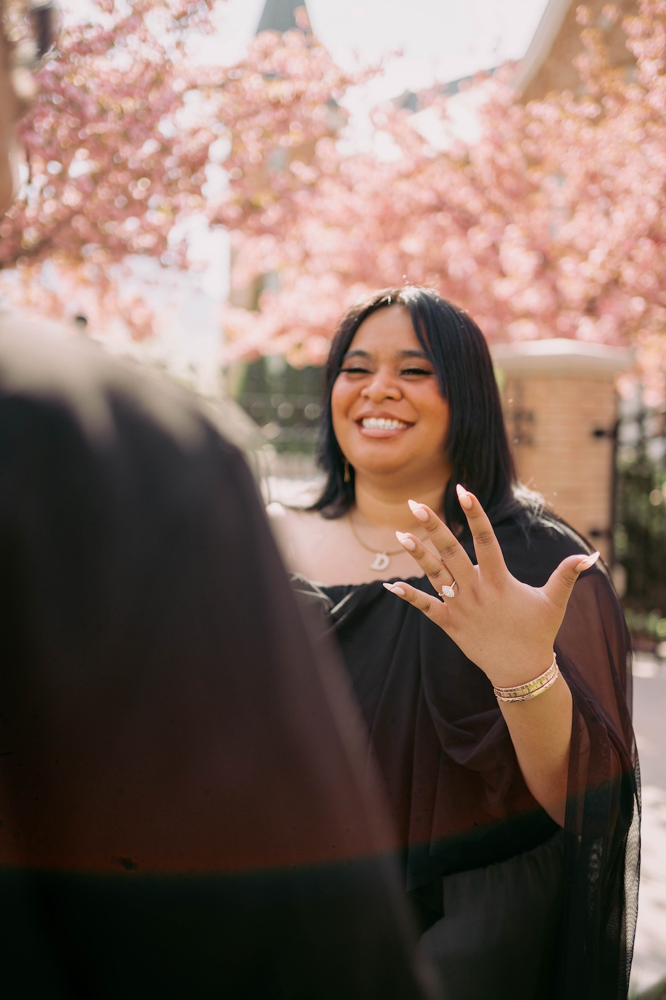

Destiny Wolfgramm
Age: 26
Parents: Molitoni & Lyza Wolfgramm
Family: Eldest Child
Career / School: Business Management Major - Ensign College
Certifications: Web & Development
Mission: Arkansas Betonville Mission| Homecoming | Mission Party
Travel: My favorite place I traveled was Oklahoma. I served my mission there for 6 months, and it became my second home.
Destiny loves to have fun and make memories with her friends and family. She has a contagious laugh and loves making the people around her smile. She has a strong testimony of her Savior and the Atonement, which is a very important part of who she is. Destiny has a big heart and is always willing to help others, making everyone around her feel loved and cared for. She loves to dance and grew up dancing alongside her sister. She also loves to sing and play the guitar. Whether she’s spending time with the people she loves, dancing, making someone laugh, or enjoying a good time, Destiny brings joy and love wherever she goes.